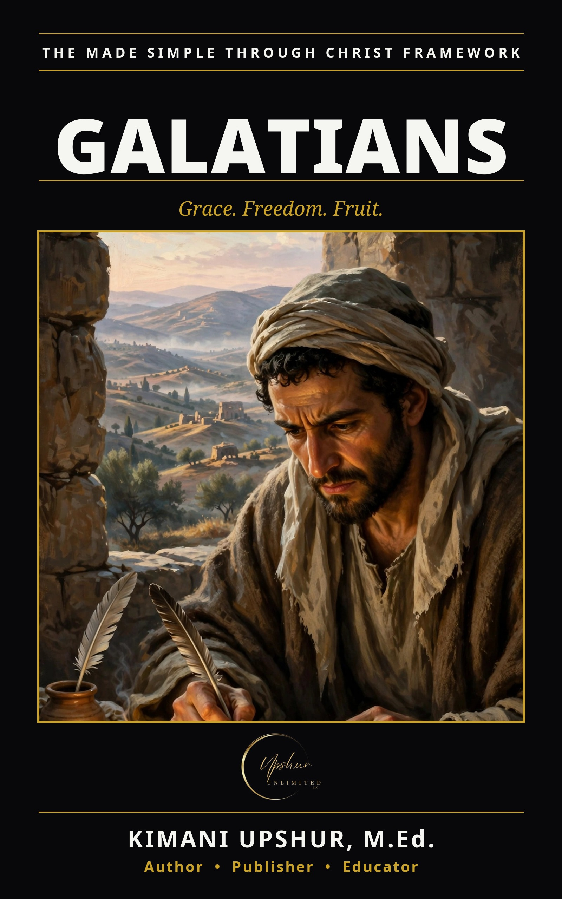

Galatians Made Simple
by Kimani Upshur, M.Ed.
Galatians is the loudest letter in the New Testament — and Galatians Made Simple walks through it slowly, one chapter a day, until its message is unmistakable: you are saved by grace, set free for freedom, and called to bear fruit. The Galatians had believed the good news, then started adding to it: Jesus plus circumcision, Jesus plus rule-keeping, Jesus plus performance. Paul's answer is the clearest statement in Scripture of justification by faith — a person is made right with God not by what they do, but by trusting what Christ has done. Across twelve chapters you will hear Paul's astonishment at the drift, watch grace choose him before he was born, stand at Antioch as he confronts Peter face to face, and receive the letter's thesis: justified by faith alone. The whole letter is carried in three words. Grace — God giving you what you could never earn: forgiveness, righteousness, adoption. Freedom — Christ redeeming us from the curse of the law, making us heirs of Abraham's promise, sons and daughters who cry "Abba, Father," commanded to stand firm and never return to the yoke. Fruit — the free heart, led by the Spirit, growing love, joy, peace, and the rest of the ninefold harvest, ending on its knees beside a fallen brother, bearing one another's burdens. Galatians Made Simple is part of THE MADE SIMPLE FRAMEWORK by Kimani Upshur, M.Ed. (Upshur Unlimited, LLC).
- Publisher
- Upshur Unlimited, LLC
- Author
- Kimani Upshur, M.Ed.
- Format
- Ebook
- Language
- English